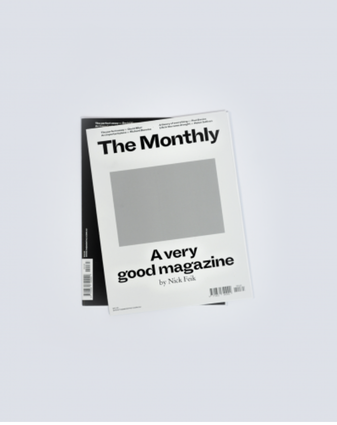

Schwartz Media publishes intelligent news and current affairs that breaks the 24-hour news cycle. We
offer a nuanced
examination of Australia and the world, focused on fresh insight and literary expression. Our audience
reads to know,
not just to agree. We invest in long-form journalism where the issues demand it, providing writing of a
quality that
makes difficult topics clear. Schwartz Media publishes Australia’s most respected writers across The
Saturday Paper, The
Monthly magazine and the daily podcast 7am, alongside our sister publications, Quarterly Essay and
Australian Foreign
Affairs.

The Monthly
The Monthly publishes long-form journalism from the nation's leading writers and thinkers, covering
Australian politics,
culture and ideas.
The Monthly
The Monthly publishes long-form journalism from the nation's leading writers and thinkers, covering
Australian politics,
culture and ideas.
The Monthly
The Monthly publishes long-form journalism from the nation's leading writers and thinkers, covering
Australian politics,
culture and ideas.